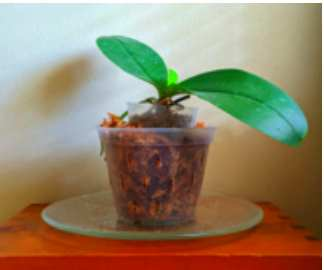

Check out the code: https://github.com/leesahanders/Chatbot
Check out the hosted chatbot: https://leesahanders.shinyapps.io/Chatbot/
The goal of this project was to build a basic chatbot and explore a couple ways of hosting it. You can check it out in action in a Shiny app hosted at leesahanders.shinyapps.io/Chatbot/
Meet the bot
| Chatbot | Name | Description |
|---|---|---|
|  | Leafey | Leafey is here to provide some plant therapy. Leafey is very simple with just key phrase look ups based on user inputs. |
It’s just the one bot for now, but check back later and there might be more added.
Chat model
Shout out to the incredible resource at https://www.r-bloggers.com/2021/01/eliza-chatbot-in-r-build-yourself-a-shrink/ where the core code parts for the chatbot are from.
At it’s most basic the important elements are: 1. List of answers based on key phrases 2. List of default answers if no key phrases are found 3. Pattern matching function
Essentially it works by using an input from the user and searching for key phrases and based on what it finds for a match returning the best matched answer. For more details check out the writeout the folks at r-bloggers did (linked above).
More chatbots can be created by copying the chatbot_leafey file and changing the name and contents to reflect the personality of the new one.
Hosting
The chat bot can now be kicked off inside whichever system wanted - whether that is in a shiny app, discord integration, or just in console using a while loop.
Console
Shout out to the incredible resource at https://www.r-bloggers.com/2021/01/eliza-chatbot-in-r-build-yourself-a-shrink/ where this code is from for kicking off your chatbot to interact with in the console until you hit exit:
cat("Leafey: Hello, I am Leafey!\n")
while (TRUE) {
input <- readline("You: ")
if (input == "quit") break
cat("Leafey:", Leafey(input))
}Shiny
The Shiny app is essentially just a wrapper for the chatbot functions. The trick was setting it up so that the user could select a chatbot and it would load the rest (so it would be reasonably scaleable), and capturing the chat with a log so that the user can see the full history of the conversation.
In order to use this feel free to clone the project and update the various sections as needed. Pay close attention to the section happening after the submit / chatbot selection action button is triggered. This is where the loading in of the appropriate chatbot is happening and various parameters are being set/reset.
Github link
The fancy ribbon is courtesy the gitlink.
ribbon_css("https://github.com/leesahanders/Chatbot", text = "Code on Github", fade = FALSE),A less fancy way to include a link would be:
# Adding div tag to the sidebar with git link
tags$div(class="header", checked=NA,
#tags$p("Raw code located on Git"),
tags$a(href="https://github.com/leesahanders/Chatbot", "Raw code located on Git, check it out by clicking here")
),References
Credit where credit is due - jokes are from: - https://www.rd.com/article/plant-puns/
For the Shiny app development I used a bunch of resources for getting the details:
- https://stackoverflow.com/questions/65365805/how-to-align-button-next-to-text-input
- https://stackoverflow.com/questions/56608214/how-can-i-keep-input-track-log-in-shiny-then-print-it-and-save-it
- https://cran.r-project.org/web/packages/kableExtra/vignettes/awesome_table_in_html.html (probably my favorite page on the internet!)
- https://clarewest.github.io/blog/post/making-tables-shiny/
- https://bookdown.org/yihui/rmarkdown-cookbook/kable.html
- https://stackoverflow.com/questions/62139431/how-can-i-make-the-first-col-aligned-to-left-and-the-rest-aligned-to-center-with
And some resources that are more aspirational, for future plans and features: - https://shiny.rstudio.com/articles/notifications.html - https://community.rstudio.com/t/shiny-contest-submission-table-editor-shiny-app/23600 - https://stackoverflow.com/questions/32335951/using-enter-key-with-action-button-in-r-shiny
Someday it would be cool to explore integrating a chatbot with discord, these resources look like they’d be useful: - https://github.com/jljsio/discordr - wrapper for Python package https://realpython.com/how-to-make-a-discord-bot-python/ - https://www.reddit.com/r/rprogramming/comments/epqfnl/making_a_discord_bot_in_r/